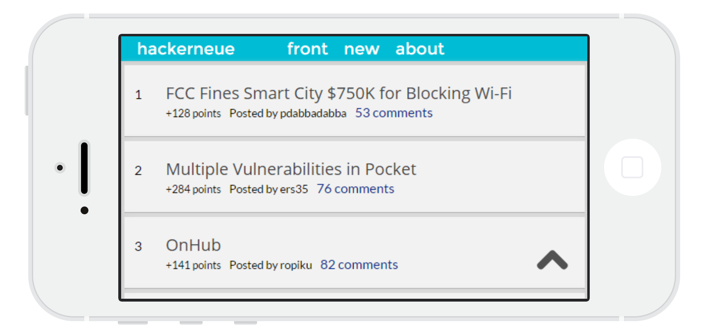
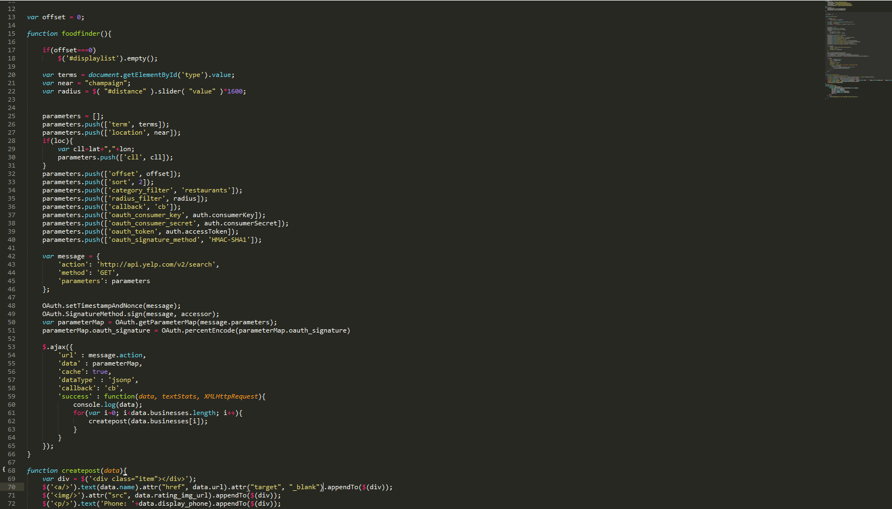

Examples
cephei.us
Technologies Used:
- HTML5
- Sass/CSS
- Javascript
- jQuery
- Firebase.js
- Youtube API
Cephei.us is a realtime music sharing platform conceptualized and created by me. It was created in HTML5, SASS (compiled to CSS), and Javascript. It uses the Firebase API in order to post and retrieve data in real time. An added benefit of this design decision was that there is no real server side code needed to run the website. It is all Javascript.
hackerneue
Technologies Used:
- HTML5
- CSS
- Javascript
- jQuery
- Firebase.js
- HN API
Hackerneue is a simple web app that uses the HackerNews API to have a more easily navigatable mobile version of the HackerNews website (if you browse it, you'll know what I mean). The original site is very functional and doesn't have much in the way of features -- but that is by design. Hackerneue follows this design decision by only showing posts, sortable by popular or new.
foodseeker.net
Technologies Used:
- HTML5
- Sass/CSS
- Javascript
- jQuery
- Yelp API
Foodseeker is a Yelp API powered food finding application. It is currently in development, and I'm looking to integrate Google Places to work along side the Yelp API to produce the most information possible (due to the different information provided by both APIs). It is being created in HTML5, SASS (compiled to CSS), and Javascript. It uses (with permission from the user) the built in HTML5 Geolocation API for maximum accuracy when looking for a place to eat.